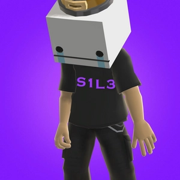

Welcome! I am a Maker Of Noise! I have never known how to classify or catagorize what I do other than: I make instrumentals for a non-existant singer. I'm certainly not a vocalist (although a couple of tracks do have my voice on). Around this website is information, history, resources and links to things that might help you. I am in no way a good source if information or help - most of what I do and how I do it, I've learnt to do myself. I've made music for most of my life in one form or another. I wouldn't say it was all good. For the most part (like ... 95%), my output is original material. Of note, going forward, there are two main ways to listen to my music: Bandcamp and then everything else. BandCamp has always been my go-to and contains everything I've done to date. Well not everything - very early songs and various other tracks aren't there (although if you're curious enough, they might be around the site somewhere). For distributed releases (Apple Music, Spotify, Amazon Music) some of the tracks had to be edited to remove tracks that contained samples and things of that nature. There is one slight negative of this sample/copyright thing however is that one EP flat out cannot be released as it contains 3/5 that are sampled and ... basically re-worked versions of the songs they were sampled from. I did re-create elements of them manually, but still. Best not try and push my luck (still on Bandcamp for free though). Bandcamp is the original unedited pieces as they were meant to be. And also, completely free. Not because I'd get into trouble if I charged for copyrighted material although ... obviously thats a big factor, but because I never made them to make money. So while you CAN get them on other platforms (I just wanted them on there to be honest, there is no real goal to sell anything) Bandcamp is your best bet. Also SoundCloud, sometimes I post works in progress and remixes there. |
Just Paranoid - from the new release coming 22/05/22 (out now on BandCamp)
How Do I Make Music?
It's changed over time based on the equipment available.
Over the years it became DAW software (primarily Reason but these days iOS and Mixcraft on PC) and a MIDI Keyboard -
currently it is the following: |